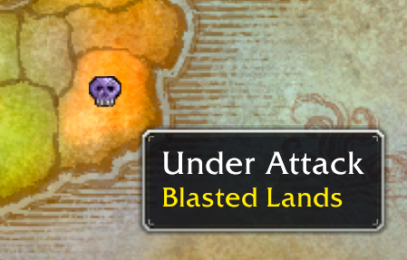

Season of Discovery
SoD Leveling & End-Game Prep Guide
A quick reference for Classic WoW players returning to (or new to) Season of Discovery. Covers new SoD-specific mechanics for quick leveling 1-60 and then at 60, how to gear up and prep for the two end game raids - Naxxramas and Scarlet Enclave.
Brought to you by Firekittenz*, come say hi on NA Wild Growth.
* - the "fire" part is TBD, still waiting on my Hand of Rag to drop
Leveling 1-60
SoD adds two new leveling boosters with incursions and level-up raids, on top of the Discoverer's Delight buff (+150% XP, +300% quest gold, despite what Wowhead says). This makes it very easy to hit 60 quickly.
You should:
- Buy your class runes at level 1 in the starting zone for 1 copper each
- Do the incursion(s) for your level (25/40/50) once a day
- Do the level-up raid for your level (25/40/50) once per lockout
- Starting at level 53 do the BlackRock Eruption (BRE) event quests once a day
- Do normal questing and dungeon runs (may be hard to find for lower levels) in between
Paid invasion boosts are also a thing, but you're on your own with that.
Important Leveling Milestones
- 1 Buy your class runes from the Alliance Rune Broker or Horde Rune Broker in your starting area - they're also in capital cities if you forget.
- 40 Get your mount! 10g for training, 40g for mount (without faction discount)
- 40 Buy dual spec from Grendag Brightbeard in IronForge or Orgrimmar.
- 40 Get the Cozy Sleeping Bag (gives you a 3% XP buff) and Student Fodder (boosts your rested XP) by following the Wowhead Sleeping Bag Guide.
- 50 Buy a full set of lvl 50 blue armor from any incursion vendor (found outside any of the four incursion entrances). This is a great way to get caught up on gear if you're at least friendly (4 pieces) or honored (+4 more pieces) with the Emerald Wardens.
- 60 Get your mount! 1000g for mount (without faction discount, no new training skill required).
Incursions
The Nightmare Incursions are daily quest hubs and best done in a group, but are partially doable solo. They're located by the dragon portals in each of the following zones listed below. Ideally have 15 open quest slots before you arrive so you can grab all the quests in at once. If not, run each monster area, hand in, and repeat.
| Level range | Zone |
|---|---|
| 22-30 | Duskwood |
| 37-45 | Ashenvale |
| 47-53 | The Hinterlands & Feralas |
Each zone has 3 monster areas. Each area has 5 quest types:
- Gather Intel - talk to a stealthed NPC.
- Recover Item - grab an item off the ground.
- Defeat Mobs - kill X mobs, sometimes elite. Skip solo if you can't handle the elites.
- Rescue NPC - escort to the world-portal ramp. Anyone in range gets credit, including other groups and the opposite faction.
- Defeat Boss - group usually required. Skip if solo.
There are also gathering quests for herbalism, mining, and skinning. Skip these unless you've leveled the profession or can buy mats off the AH.
Level brackets per this reddit comment.
Level-up Raids
These are usually good for a couple of levels worth of XP and some decent gear. Join a group if you see one in the #LookingForGroup chat channel. They're usually carried by a bored level 60 or two so don't worry about gear requirements to join.| Level | Raid |
|---|---|
| 25-30 | Blackfathom Deeps (BFD) |
| 40*-45 | Gnomeregan (Gnomer) |
| 50*-55 | Sunken Temple (ST) |
* - you can enter Gnomer and ST below the "minimum" level, just make sure your group has a strong carry as you won't be very effective
Blackrock Mountain Eruption (BRE) Event
Every 2 hours (every even hour, server time) an event is active in Searing Gorge. Head to Thorium Point and pick up the daily quests. You can start doing them at level 53, but you'll need a group to finish all of them. It's usually easy to find someone else in the zone doing the quests and invite them.
The quests are only available to pickup and complete during the one-hour event window. The one exception is the Oh, Shiny! quest which can be completed after the event is over. Completed quests can be handed in after the event is over.
You'll get Firelands Embers as quest rewards. They're mostly for outdated Phase 4 fire-resist gear, but you can buy some valuable mats with them if you collect a lot - talk to Lokhtos Darkbargainer in the bar in BRD.
See more details in the wowhead guide.You hit 60. Now what?
The goal is to get ready for the two end-game raids: Naxxramas and Scarlet Enclave. The first step is to replace your leveling gear with T1/T2/T2.5 tier gear and then you can start on your Naxx prep.
Gearing Up Quickly
A guaranteed weapon
Pick up The Perfect Poison before any AQ20 or ZG runs. After one run of each, you're guaranteed an epic lvl 60 weapon - there's a viable option for nearly every spec.
A guaranteed trinket
Head to Light's Hope Chapel in Eastern Plaguelands - get comfy, you'll be here a lot. Inside, talk to Leonid Barthalomew the Revered.
- Grab Scarlet Activities.
- Do the followup quests and you'll get to the start of the trinket chain with My Old Enemy.
- The final leg of the trinket chain starts at The Wrecked Caravan and sends you out of town.
- Continue through to The Right Path for the trinket reward.
Note that for The Culling you'll be sent inside of Stratholme and have do sit through an RP event near the end of the undead side. Do NOT just start it and walk away to join the rest of your group who are off killing monsters! You will fail the quest. If it does fail, just drop it, pick it up outside the entrance, and run back through the cleared instance to restart the RP.
There's a helpful Wowhead comment that shows the entire chain for these quests
Reals & Tier Gear
Tarnished Undermine Reals (a.k.a. “reals”) are the easiest source of fresh-60 gear. They're a new currency that drops mainly from dungeon and raid bosses. You can buy the full T1 armor set with them, some T2 pieces, a powerful class weapon, and a few other useful items. Spend them with Pix Xizzix in Booty Bay.
Where to get reals
Note that while 5-man dungeons (except for KC) don't have lockouts, the bosses will only drop reals once a day. Groups doing “reals runs” will typically do all sides/wings of a dungeon area.Daily (5-mans)
- Strath - 19
- Blackrock Spire (BRS) - 16
- Dire Maul - 16 (DM:N guards drop none)
- Scholo - 16
- Demon Fall Canyon (DFC) - 12
- BRD - 11
- Karazhan Crypts (KC/Kara) - 30 (5/boss × 6)
Weekly raids
- MC - 30
- AQ40 - 27
- BWL - 24
Twice weekly
- AQ20 - 18
- ZG - 10
- World bosses (rare to see groups for these) - 3 each (Onyxia, Azuregos, Thunderaan, Kazzak)
Bonus sources
- Supply Bag from Karazhan Crypts curio hand-ins (need attuned). 1-5
- Scarlet Junkbox from the New Avalon weekly. 12-15
Solo tier hand-in trick. You need to be inside a raid instance to redeem the tier tokens for MC/BWL/AQ40. Once attuned, MC and BWL let you in solo without being in a raid group - just talk to the NPC or click the orb. To zone into any other raid instance, macro this and spam as you bounce in and out of the instance portal:
/run InviteUnit("notaunit");C_Timer.After(.25,function() ConvertToRaid() end)Main items and prices at reals vendor
| Item | Reals |
|---|---|
| T1 Armor Tokens (full set available) | 15-25 each, 160 for all |
| T2 Wrist / Waist / Hands / Feet | 35 each, 140 for all |
| BWL class weapon (very powerful if you can afford!) | 150 |
| Main hand / Off hand / Ring / Trinket | 50 each |
| Idol / Totem / Libram | 15-25 each |
Other sources of tier
You can buy the full T1 set and half of the T2 set with reals. Outside of the main tier raid source (T1 → MC, T2 → BWL, T2.5 → AQ40), you can get tier tokens from other raids now:| Item | Source |
|---|---|
| T1 (any slot) | Onyxia |
| T2 Belt | Thunderaan (drops 2 per kill) |
| T2 Helm / Shoulder / Chest / Legs | Nightmare Dragons |
| T2.5 Helm / Shoulder / Legs / Feet | Nightmare Dragons |
Attunements
Three you'll want as a fresh 60:
- DFC - Demon Fall Canyon. Grab Demonic Deceptions in Felwood. Hint: kill the owlbeasts in the Hidden Grove in NE Winterspring for best drop rate
- MC - Molten Core. At level 55+, grab Attunement to the Core and do a BRD run. Note you must be lvl 60 to enter MC itself.
- BWL - Blackwing Lair. Kill the Scarshield Quartermaster by the entrance to BRS and loot Blackhand's Command to start the attunement quest. Click the orb at the end of a UBRS run to complete it.
Optionally:
- Karazhan Crypts (KC) - not required anymore to enter, but does let you hand in looted Karazhan Curio for mats and reals. Starts with For Gold And Glory! at the new LHC billboard.
- Onyxia - have fun! Or, if you're an alt, there's an account-bound Chipped Drakefire Amulet you can get. Sadly, no one really runs Ony any more
Naxx Prep
tl;dr:- Farm scourge invasions for Necrotic Runes, Remnants of Valor (note: these are ACCOUNT BOUND), and argent dawn rep
- At honored with argent dawn, complete the naxx attunement quest The Dread Citadel and grab the followup Echoes of War
- Get yourself 8 pieces of sanctified gear
- Zone in to naxx for the first time and buy your Rank 7 seal with 3150 remnants of valor
You need to be honored with the Argent Dawn before you can do the attunement quest The Dread Citadel - Naxxramas See below on Scourge Invasion Farming for a good source of rep.
You can't get tier gear until you complete the quest Echoes of War Don't be a noob and miss this! Grab it right after the attunement quest. You'll complete it during your first naxx run as your group clears all the trash at the start of each wing
To get invited into a naxx raid group, you need three things:
- attunement
- 8 sanctified items
- max rank 7 seal
These are the important currencies for this section and are acquired by farming scourge invasion mobs:
- Necrotic Rune - get these from invasion mobs. Spent at the Argent Quartermaster (Alliance) or Argent Outfitter (Horde) for sanc gloves (ex: Handwraps of Undead Slaying) and DPS consumables (ex: Blessed Wizard Oil).
- Remnants of Valor - get 300 per completion from the repeatable scourge-invasion quest Never at Rest. Spent on Seal rank-ups inside Naxx - you need 3150 total. Again, these are account bound and if you have these on another character you can mail them over.
- Argent Dawn Valor Token - the O.G. Argent Dawn currency, used for buying shoulder enchants from Brother Luctus in EPL. The valor tokens can be bought with the classic scourge stones from dungeon runs/mobs or the new necrotic runes/remnants of valor.
Scourge Invasion Farming
So, how do you actually get those above currencies? First, find or make an "invasion farm" group - some classes/specs can solo these, most can't. You can whittle away at the mobs with just a tank and a healer, but 3+ is preferable.
You need to find a zone with an active invasion - look on the world map for a zone with a purple skull on it. It'll look like this:

In the zone, look for one of the Naxx flying pyramid things in the sky - it'll be shooting purple projectiles to one or more locations, follow them to find an invasion crystal.Once you find a crystal - it'll be surrounded by mobs. Do the following:
- Kill the mobs by the crystal to damage the crystal - once its health drops to 0, 4x Cultist Engineers will spawn
- Talk to the NPCs one at a time to spawn a Shadow of Doom. You'll need 8 necrotic runes, which you should have gathered from killing the invasion mobs. Kill the shadow.
- Click the crystal that spawns after the shadow dies to loot a Heart of Doom. Anyone can loot this.
- Take your freshly-looted heart to Brother Luctus and hand in for 300 remnants. Note: he spawns in (or close to - Swamp of Sorrows) any zone that has invasions. Questie will show his location as a repeatable quest giver.
- Repeat until all 4 Shadows are killed, looted, and the hearts handed in
These farms are also a great way to quickly earn Argent Dawn rep - each kill gives you some and you're going to kill a LOT of these.
Tip: grab this weakaura to auto-need on the necrotic runes, you'll be seeing a ton of them and the looting gets annoying: https://wago.io/lo6GWhd_D
Full Scourge Invasions GuideSeal of the Dawn
When you first zone into Naxxramas, talk to Kug Softjaw near the entrance to receive your Seal. Pick the bonus that matches your role (you can swap later): damage, threat+damage, or healing. Upgrade rank by handing in Remnants of Valor to Kug.
Naxx power scales with: Seal Rank × Sanctified Item Count
The bonuses only apply inside Naxxramas, and are throttled by the number of empowered (hardmode) wings active. Most runs are HM3 which takes full advantage of the Rank 7 seal. Some runs will do HM2, where only up to Rank 6 is used - but aim for Rank 7.
You need 3150 total Remnants of Valor to hit Rank 7 from scratch.
A few things to note about the seals:
- The seal upgrade quest doesn't remove the lower-ranked seals from your inventory. Just destroy them
- If your class has multiple roles (tank, DPS, heals) don't worry about which seal you initially upgrade, you can buy seals for any spec for free
- If you're short on bag space, you can apparently turn the seal buff on then destroy the seal itself without losing the buff
| # | Title | Total Remnants (from scratch) |
HM cap | Damage | Healing | Threat | Health |
|---|---|---|---|---|---|---|---|
| 6 | Champion | 2250 | HM 2 | 18.13% | 13.13% | 7.5% | 18.13% |
| 7 | Vanguard | 3150 | HM3+ | 21.25% | 15% | 8.13% | 21.25% |
Attunement
The attunement quest is The Dread Citadel - and requires Honored with the Argent Dawn plus some mats, depending on your rep. The turn-in costs have been reduced from what they were initially, but be prepared to buy a couple of arcane crystals at least. Invasion mobs and Scholo / Strath runs grant AD rep; you can also hand in AD valor tokens. You'll probably be close to honored from the invasion farming you did to get your rank 7 seal (you do have your rank 7 seal, right?)
I'm going to remind you again - pickup Echoes of War right after you hand in the attunement quest so you'll be able to turn in your T3 gear tokens.
Sanctified Gear
“Sanctified” gear is anything tagged Sanctified or with the blue Scarlet Enclave Scarlet Uniform tag. You need 8 pieces in Naxx. This will wreck your carefully-built T1/2/2.5 set bonuses initially, so be forewarned, but the sanc mechanic is more powerful than any specific set bonus.
Quickest path before your first Naxx run:
- Buy sanctified gloves from the Argent Outfitter for 30 Necrotic Runes
along with the matching BoE bracers from the auction house.
There's an appropriate set for any class/spec and their 2-piece set bonus treats your Seal as if you were
wearing 2 additional sanctified pieces
-
so the bracers and gloves alone count as 4 effective sanctified pieces toward your Seal calculation.
Example pair for leather dps: Handwraps of Undead Slaying and Wristwraps of Undead Slaying - Run Karazhan Crypts daily - no attunement needed any more. It has a lot of very strong, and in some case BiS, sanc pieces. BEWARE - this is not a place for undergeared characters, so don't try this unless you have several T1/T2 pieces already.
- Fill remaining slots with Scarlet Uniform pieces (they count as sanctified).
Echoes of War - do this before your first Naxx
Pick up Echoes of War from Light's Hope Chapel before you ever zone into Naxxramas. You complete it by killing mobs inside the raid - and until it's done, you cannot turn in tier 3 tokens. And this is your 4th reminder in this guide, so don't blame me if you forget it and can't get any tier your first lockout :)
Shoulder Enchant - also very important
Complete Laid to Rest (early part of the Naxx-prep quest chain) to unlock the buyable shoulder enchants. You then pick a T1, T2, or T2.5 set bonus to apply. This is a free tier bonus! It's in addition to your normal shoulder enchant. Brother Luctus in EPL sells them.
Argent Dawn Valor Tokens are the currency used to buy the shoulder enchants. You can buy them with Necrotic Runes or Remnants of Valor, or get them from Scourgestone hand-ins from the Argent Dawn.
Naxx Hardmode Reference
Here's a quick table showing requirements and loot differences between the commonly-seen naxx hardmodes:| HM Level | Min. Seal | Tier Pieces | Offpieces | Splinters | Sapph Enchants | Tier Rings | Mounts |
|---|---|---|---|---|---|---|---|
| HM2 | Rank 6 | 30 | 41 | 13 | 3 | 3 | 0 |
| HM3 | Rank 7 | 44 | 41 | 13 | 3 | 4 | 0 |
| HM4 | Rank 7 | 44 | 41 | 26 | 4 | 4 | 1 |
Scarlet Enclave Prep
No attunement is required to enter SE.
Three important things:- Start the quest chain for the scarlet enclave bosses
- Get your scarlet disguise
- Do the weekly quest for the Jostled Chalice Fragment - this gives FREE T3.5 tier pieces over time
Scarlet Enclave Quest chain
Your goal here is to get your Hearthstone of the Dawn after your first full clear of the new Scarlet Enclave raid.There is the quest chain starting at The Scarlet Reclamation from Leonid Barthalomew in LHC. This will lead you to Decapitation Strike which is where you want to be when you head into SE for the first time. There are two followups inside SE - you'll want to visit and return to Lord Maxwell Tyrosus inside the SE jail as you progress.
Scarlet Uniform and Disguise
As you're doing these SE quests, you'll eventually get to New Avalon which gives you a Scarlet Insignia. You'll need four pieces of the Scarlet Uniform crafted gear (ex: Scarlet Augur's Hood) then you can use the insignia to make the New Avalon NPCs friendly. There's a set for cloth, leather, mail and plate wearers.
They count as both Scarlet Uniform and Sanctified gear.
Any tailor / leatherworker / blacksmith can learn the recipes and craft them inside of New Avalon. The recipes and the crafted gear are usually available in the auction house, or from your friendly guild crafters. You'll need to get this disguise to do jostled chalice fragment quest (see below).
There's a full breakdown at Wowhead
Jostled Chalice Fragment
Every 3 weeks you are guaranteed a free SE tier piece. By doing the weekly Prove Your Worth: quest at Byron Steelblade in New Avalon (disguise required) you earn a Scarlet Junkbox which has at least one Jostled Chalice Fragment (and a bunch of reals). Three of those turn into a Crusader's Chalice which you can hand in for a tier piece (disguise required). You'll also earn one fragment during an SE run.
The T3.5 Scarlet Enclave tier pieces also count as uniform pieces when you're using your Scarlet Insignia to turn on your disguise
- Install the TomTom addon
- On the Blood of Heroes wowhead page, click any of the pins the map and under "Copy All" select "TomTom Command"
- In the game, type /ttpaste in chat and paste in the copied coordinates. Click the "Paste" button to close.
- Now you have (almost) all of the New Avalon blood locations!
- Run in a loop in New Avalon, they seem to spawn here WAY more frequently than outside in EPL
Reputation
Good news: rep no longer gates most gear (e.g., AQ40). What you still want it for: ZG shoulder enchants, various crafting recipes, douses for MC, and maybe a few other specific items.
Zandalar Tribe (ZG)
See the Wowhead Zandalar Tribe SoD guide. Get those Exalted shoulder enchants.
You can also buy Blood-Caked Hakkari Bijous from Mai'zin for 1× Blood-Caked Silver Coin. Coins drop from the STV Blood Moon event - sometimes there are farm groups. With a good farm group you can get 40-50 silver coins (4000-5000 copper coins). The blook-caked bijous act as normal bijous (and can even be sold on the AH).
ZG Rep Calculator
How many bijous, gold, Bloodmoon events, or ZG runs to your next standing?
| To | Bijous | Gold | Bloodmoon events | ZG runs |
|---|---|---|---|---|
| Friendly | ||||
| Honored | ||||
| Revered | ||||
| Exalted |
Calculator assumptions
- Rep per bijou: 125 (75 from destroying + 50 from the rep token).
- Full ZG run: 3000 rep.
- Standing rep: Neutral → Friendly 3000 · Friendly → Honored 6000 · Honored → Revered 12000 · Revered → Exalted 21000.
- Blood Coin cost: 1 per bijou. AH supply is severely limited.
- Bloodmoon events: assumes 45 Blood-Caked Silver Coins per event.
Brood of Nozdormu
While this rep is much less important than in the past since it's not required for tier pieces, the rings can be nice, especially for offspec gear
See the Wowhead Brood of Nozdormu SoD guide. An epic ring is granted at Neutral. Weekly AQ20/AQ40 runs will reach it in a few weeks. These rings powered the “Timeworn” mechanic during the AQ40 phase and still have decent stats for some specs.
Tanaris elite-spawn farming up to near-Friendly used to be viable but is largely a thing of the past.
Blackrock Eruption (BRE) Dailies
Useful for completionists chasing Hydraxian Waterlords rep (quintessence for summoning last 2 bosses in MC, water walking boots, azshara teleport) and, of lesser importance these days, Thorium Brotherhood (recipes, MC item upgrades). Turn-ins also grant 46G per run.
BRE Rep Calculator
How many BRE events to reach your target standing with each faction?
| Faction | Rep / run | Current | Progress | Target | Events |
|---|---|---|---|---|---|
| Hydraxian Waterlords | 1350 | ||||
| Thorium Brotherhood | 2450 |
Calculator assumptions
- Hydraxian: 1350 rep per run. Thorium: 2450 rep per run.
- Standing rep: Neutral → Friendly 3000 · Friendly → Honored 6000 · Honored → Revered 12000 · Revered → Exalted 21000.
SoD Travel Shortcuts
SoD added a lot of new ways to move. Engineering has its own teleporters (not listed here); these are the ones generally available.
- Lvl 40 profession quest. If you did the Phase 2 epic crafting quest chain, the teleporter in Booty Bay drops you in Feralas near Dire Maul.
- Emerald Ring Get this at friendly rep with the Emerald Wardens (the incursions people). Teleport (aka "Enter the dream") to anyone in any incursion zone (Duskwood, Ashenvale, Hinterlands, Feralas).
- Shiny Archaic Vestige A second hearthstone - account-bound, so mail it to whichever alt is currently active. The Khonsu and Secret Agents quests are one of the most fun and challenging things to do in SoD, highly recommend trying!
- Light's Hope Chapel teleport. Complete SE for a teleport to LHC item Hearthstone of the Dawn
- Hydraxian teleport. Earn revered with the Hydraxian Waterlords for an Azshara teleport in the form of Beacon of Hydraxis
Cool SoD Things
New Dungeons
There are two new lvl 60 dungeons available:- Demon Fall Canyon (DFC) - requires an easy attunement, has some good weapons, rings, and trinkets
- Karazhan Crypts (KC) - attunement optional (bonus loot), a MUST EXPERIENCE for new SoD players, not for undergeared players, has some class BiS items, very strong sanctified items, and a bunch of enchanting recipes.
Water Walking Boots
Earn honored with the Hydraxian Waterlords (see BRE event) and grab the Water Treads from Duke Hydraxis
Learn All Blacksmithing / Engineering / Leatherworking Specs
After level 55 you can train all specs for blacksmithing (armorsmithing and master sword/axe/hammer-smith) and leatherworking (dragonscale, elemental, and tribal) - no choice required. You do however still have to complete each spec's different quest.
For engineering, you can use Engineering Exchange Tickets to buy recipes from the other spec. See the wowhead questline guide for details.
Buyable World Buffs
While queueing up outside of Dire Maul for the tribute buffs was an iconic part of Classic, SoD has replaced the drudgery of traveling all around the world for buffs with purchasable consumable versions.
The most common way to acquire these is handing in 20 runecloth bandages for 10 commendation signets, and using those to buy the buffs.
For Alliance - talk to Keeper Moonshade in Ironforge to get Alliance Commendation Signets and buy the buffs from Ironforge Commendation Officer.
For Horde - talk to Stoneguard Clayhoof in Orgrimmar to get Horde Commendation Signets and buy the buffs from Orgrimmar Commendation Officer
| Cost | Buff | Duration | Effect |
|---|---|---|---|
| 5 | Spirit Conch | 2h | ZG buff - +10% movement speed, +15% stats |
| 5 | Firewater Cauldron | - | Replacement for Winterfall Firewater (that's why they're so cheap now in the AH). |
| 5 | Overseer's Anvil | 1h | Rend buff - +300 HP, +15% melee haste, +10 mp5 |
| 5 | “Defective” Magic 8-Ball | 2h | DM Faire buff - +10% damage |
| 5 | Songflower Seed | 1h | Felwood Songflower - +5% crit (all), +15% stats |
| 5 | Shimmering Globe | 2h | DM Tribute - +200 AP, +15% stam, +3% spell crit |
| 5 | Horn of the Dawn | 2h | Ony/Nef head - +10% spell crit, +5% melee/ranged crit, +140 AP |
That's 35 signets, or 70 runecloth bandages, or 3.5 stacks of runecloth for a full rack of buffs.
Onyxia Attunement is Account-Bound
Once one character has completed Ony attune, talk to Squire Rowe (Alliance) or Eitrigg (Horde) to buy a Chipped Drakefire Amulet for your alts.
Nitro Boosts (No Engineering Required)
Engineering is no longer mandatory for the belt-speed enchant. Non-engineers can buy a consumable Tinkerbox: Nitro Boosts and rejoice.
Visit old IF
There's a great toy item that used to drop in gnomer but is now available for reals - Aragriar's Whimsical World Warper. It'll take you to random places around the world (make sure your hearth is up first), and one of the places is Old Ironforge, which is usually inaccessible underneath Ironforge. Bubbles the toy vendor in Booty Bay sells it.Unlimited* Noggenfogger
* - not actually unlimited, has 200 charges
You can get a Bottomless Noggenfogger Elixir (great for proc'ing featherfall) by completing the The Thirsty Goblin quest chain in Tanaris, buying 200 regular Noggenfogger Elixir then going to Bubbles the toy vendor in Booty Bay.
Facilities in New Avalon
The New Avalon location in EPL isn't just a new questing and crafting area, it also hosts some useful facilities (Scarlet Insignia or tabbard disguise required):- a mailbox - scrolls in cart by main archway entrance
- a bank - boxes in keep to left, opposite of where weekly quest is
- an alchemy bench - alchemists rejoice! in basement of keep
- neutral AH - sometimes Captain Bloodcoin will be up down at the docks
Class Specifics
Paladin
Squire
Get a squire! Dalton's Horn
Pally Power
Pallies - make sure you get the Pally Power addon or you will be mercilessly mocked in raids.
Truthbearer Enchant
Wondering what happens if you put a 2H enchant on your brand new Truthbear and transform it to 1H mode? Good news! You don't lose the 2H enchant. But if you put one of the newer 2H enchants (ex: Grand Arcanist) on it, it'll behave like the 1H equivalent (ex: Grand Sorcerer)
Leg rune - don't forget to CAST IT
So, this is really embarassing - for the longest time on my pally I thought the leg rune that breaks fear and sleep Inspiration Exemplar didn't work. Turns out, just having the leg rune on isn't enough - it gives you an ability you have to CAST.
Priest
Fear Ward For All
Of any race - pick up an additional racial. Fear Ward for everyone! Talk to the Divine Apprehension in the chapel by Karazhan when someone announces "the light is on" in global chat.
Druid
Wolfshead Helm
Feral druids no longer have to farm Gnomer endlessly and wear a lvl 45 helm! Get catnip and your Wolfshead Trophy helm enchant.
Mage
Resurrection Scroll
Be the group hero and resurrect the dead! Scroll of Reintegration.
Get the good water
Buy a Tome of Conjure Water VIII from Lyranne Feathersong in Winterspring (ALLY) or Kurll in Azshara (HORDE) to be able to make Mountain Spring Water
Warrior
Mini-Onyxia Buff
You can give your group a mini-onyxia buff after reading Handbook of Valor of Azeroth
How to get it: have any character (yay!) complete the Onyxia attunement chain (boo!) then they can buy the account-bound book from Squire Rowe in Stormwind.
Hunter
Core Hound Pets
Always thought that the core hounds in MC would make the perfect pet? Now they can be! Do the The Burning Beast quest for a Infernal Lasso and the ability to tame the core hounds that have escaped from MC.
Pridewing Pets
Want more new pets? Get a Wyvern Taming Wand from the quest Wild Wyvern Wrangling and get yourself a Young Pridewing
KC Flare
Tired of switching to melee in Kara Crypts, or standing back in the dark and griefing your healer? You can get an upgraded version of flare via Tome of Enchanted Flare that counts as a light source! Look for a scroll on a table in one of the rooms by the apprentices.
Warlock
Neverending Soul Vessel
Grab a Neverending Soul Vessel to help with the soul shard grind. You'll need to complete two rune quest lines to get it - Metamorphosis Rune and the Grimoire of Synergy Rune
Demon Wings
The new demon form is cool and all, but what's better than a tiny little gnome with wings main-tanking raids? At 60, follow the wowhead guide on getting your wings.
Other classes
Feel free to submit suggestions for other classes, I know there's more cool stuff out there!
End-Game Resources
- WoWSims SoD - can't decide between two pieces of gear? Sim them both and see which one does better
- Community BiS spreadsheet - sim links for best performing gear for each class/spec
- Wowhead SoD class guides for gear, rotations, talents, runes, etc.
SoD-Specific Addons
These addons have SoD-specific elements to them (in addition to their general awesomeness):- DBM Vanilla - includes SoD raids
- Nova Instance Tracker - track your reals runs
- Nova Raid Companion - shows sanc gear for all raid members (though sadly it doesn't recognize the scarlet uniform pieces)
- Atlas Loot SoD - SoD-specific loot tables.
- Engraver - helps with runes
- Questie - has all of the SoD stuff. WARNING: may lag in raids. If your frame rate stutters in raid instances (esp. Naxx and SE), try disabling Questie.
About this guide
This guide assumes you know Classic WoW. It focuses on what's SoD-specific: new mechanics, currencies, attunements, and the path from a fresh 60 to a Naxxramas raid spot and on into Scarlet Enclave.
References and inspiration:
- Community catch-up spreadsheet from Phase 7 returner guide (reddit)
- “No, it's not too late to start SoD” (reddit)
Feedback & gaps
If you spot something wrong or missing, open an issue on the project repo at https://github.com/Lornath/WelcomeBackToSod/issues or drop a comment on this reddit post